Dance and movement activities in Turin and around
Dance classes and social dance nights, hikes, bike rides and outdoor activities in Turin and around.
Search all workshops39 activities coming up · updated on 23 November 2026
- fri4decDance and movementMusicality: Argentine tango workshopFriday 4 December, 20:00–21:30Cenisia (TO) · 30 €with Carma Tango Academy with Letizia Messina e Pablo Linares
- from5decDance and movementSnow Latin Week: salsa and bachatafrom Saturday 5 December to Tuesday 8 December, 12:00–17:00Bardonecchia (TO) · from 299 €with Like This Agency
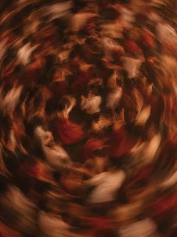
thu10decDance and movementDanzare il cerchio: pizzica residencyfrom Thursday 10 December to Sunday 13 DecemberTurin · from 35 €with Onde South with Valentina Padovan e Michela Denittis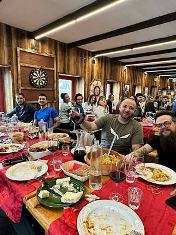
sun13decDance and movementChristmas at Rifugio Jervis: hike and lunchSunday 13 December, 09:30–16:00Bobbio Pellice (TO) · from 65 €with Deep Experience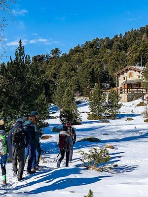
sun20decDance and movementAlevè forest: winter hikeSunday 20 December, 09:30–15:30Casteldelfino (CN) · Freewith Parco del Monviso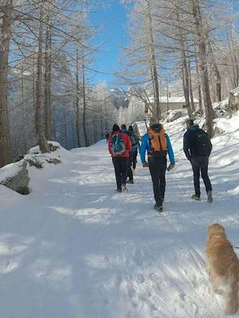
sun17janDance and movementPian della Mussa: hike and lunchSunday 17 January, 10:00–16:00Balme (TO) · 65 €with Deep Experience- from22janDance and movementGricel Tango Weekend: seminar with Chichofrom Friday 22 January to Sunday 24 January, 20:00San Donato (TO) · 200 €with Proyecto Gricel with Chicho Frumboli e Juana Sepúlveda
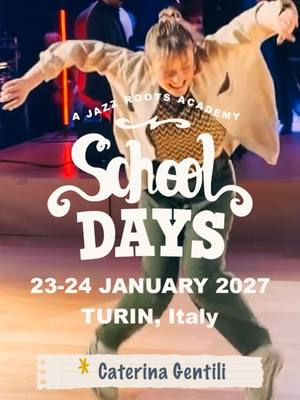
sat23janDance and movementSchool Days: swing and musicality workshopfrom Saturday 23 January to Sunday 24 January, 10:00–21:00Turinwith Dusty Jazz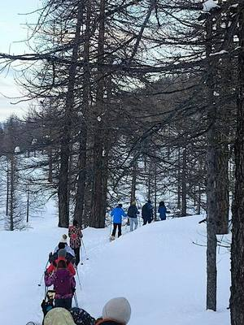
sat13febDance and movementNight snowshoeing in Prali: snow and mountain hutfrom Saturday 13 February to Sunday 14 February, 15:30Prali (TO) · from 175 €with Deep Experience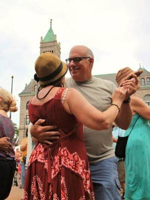
fri16aprDance and movementSwing Train Festival: three days of Lindy Hopfrom Friday 16 April to Sunday 18 AprilTurinwith Dusty Jazz dateTBDOtherCascina Roccafranca: this season’s coursesDate TBDMirafiori (TO)with Cascina Roccafranca
dateTBDOtherCascina Roccafranca: this season’s coursesDate TBDMirafiori (TO)with Cascina Roccafranca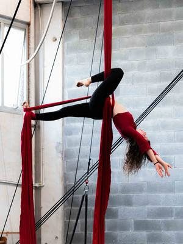
dateTBDDance and movementProgetto SLIP: circus and aerial coursesDate TBDBarriera di Milano (TO) · from 190 € per yearwith Progetto SLIP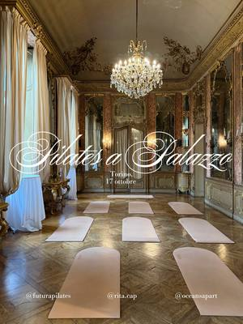
dateTBDDance and movementPilates a Palazzo: class and breakfastDate TBDTurinwith Rita Capparelli with Futura Pilates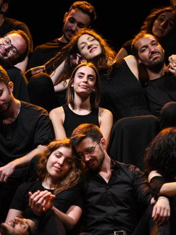
dateTBDMusic and theatreSPLIT Teatro: acting, musicals and singingDate TBDMirafiori (TO)with SPLIT Teatro dateTBDDance and movementStudio21: street dance classesDate TBDLingotto (TO)with Studio21 Street Dance School
dateTBDDance and movementStudio21: street dance classesDate TBDLingotto (TO)with Studio21 Street Dance School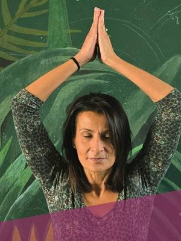
everytueDance and movementMuscle wake-up: movement for over-60sEvery Tuesday, 09:00–10:00Mirafiori (TO) · 6 € per lessonwith Pamela Greco at Casa nel Parco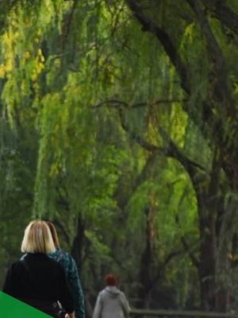
everyfriDance and movementWalking group: walks for over-65sEvery Friday, 09:30–11:00Mirafiori (TO) · 5 € for 4 sessionswith UISP Torino at Casa nel Parco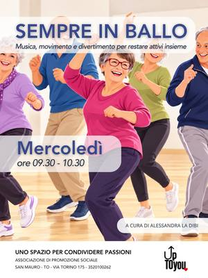
everywedDance and movementKeep on dancing: music and simple stepsEvery Wednesday, 09:30–10:30San Mauro Torinese (TO)with Alessandra La Dibi at upTOyou everytueDance and movementMums on the move: walks with babiesEvery Tuesday, 10:00–12:00Mirafiori (TO) · Freewith Casa nel Parco
everytueDance and movementMums on the move: walks with babiesEvery Tuesday, 10:00–12:00Mirafiori (TO) · Freewith Casa nel Parco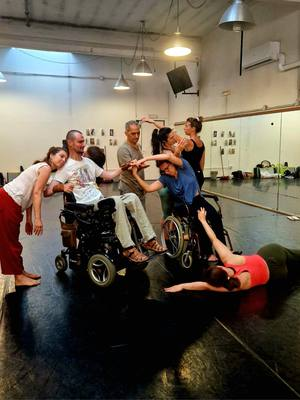
everywedDance and movementEvery body dances: inclusive danceEvery Wednesday, 10:00–11:00Aurora (TO) · from 5 € per lessonwith Giorgia Mascarello at Cecchi Point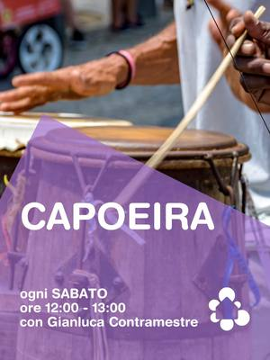
everysatDance and movementCapoeira course: dance, music and martial artEvery Saturday, 12:00–13:00Mirafiori (TO) · 40 € a monthwith Gianluca Contramestre (Senzala Torino) at Casa nel Parco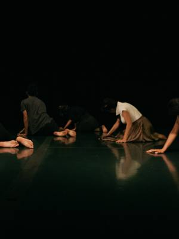
everytueDance and movementDance improvisation: free movementEvery Tuesday, 16:00–17:00Aurora (TO) · 12 € per lessonwith Zoe Samuelov at Cecchi Point everywedFor familiesKids’ Wednesdays: music and movementEvery Wednesday, 17:00–18:00Mirafiori (TO) · Pay what you likewith Sara Formicola at Casa nel Parco
everywedFor familiesKids’ Wednesdays: music and movementEvery Wednesday, 17:00–18:00Mirafiori (TO) · Pay what you likewith Sara Formicola at Casa nel Parco- everywedDance and movementBodies that tell stories: movement for womenEvery Wednesday, 18:00–19:30Aurora (TO) · Pay what you likewith Sara Lomanto at Cecchi Point
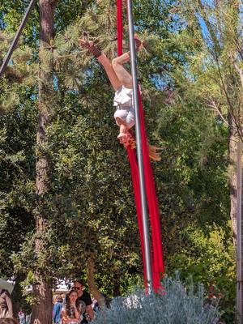
dateof your choiceDance and movementAerial arts course: trapeze and silksEvery Monday and Wednesday, 18:00–22:00Aurora (TO)with Collettivo Makako at Cecchi Point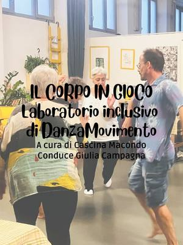
everymonDance and movementThe body at play: inclusive dance movementEvery Monday, 18:30–20:00Barriera di Milano (TO)with Cascina Macondo at Bagni Pubblici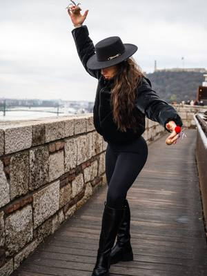
everythuDance and movementRitual dances: pizzica and tarantellaEvery Thursday, 18:30–20:30Barriera di Milano (TO) · 75 € per monthwith Valentina Padovan at Bunker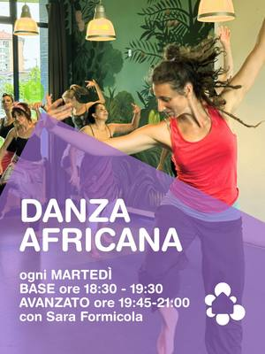
everytueDance and movementAfrican dance course: beginnersEvery Tuesday, 18:30–19:30Mirafiori (TO) · 40 € per monthwith Sara Formicola at Casa nel Parco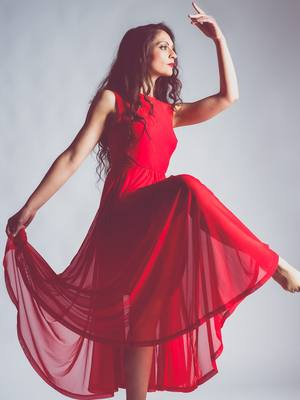
everytueMusic and theatreWhat moves us: dance theatre courseEvery Tuesday, 18:30–20:00Aurora (TO) · 50 € per monthwith Manuela Marascio at Cecchi Point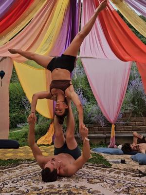
everymonDance and movementAcroyoga course: balancing in pairsEvery Monday, 19:00–20:30Barriera di Milano (TO) · 15 € per lessonwith Bunker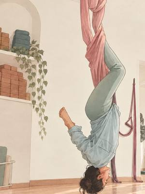
everywedDance and movementFlying Yoga course: yoga on aerial silksEvery Wednesday, 19:45–20:45Campidoglio (TO) · 18 € per lessonwith MadreIndia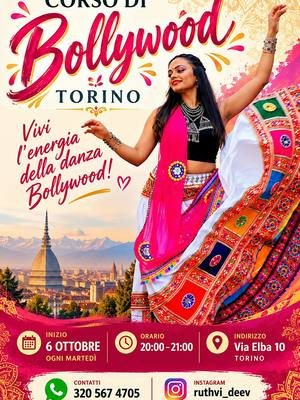
everytueDance and movementBollywood course: Indian danceEvery Tuesday, 20:00Lingotto (TO) · 15 € per lessonwith Ruthvi Deev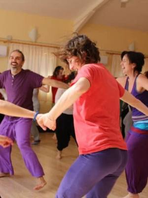
everyfriDance and movementBiodanza: music and free movementEvery Friday, 20:30–22:30Aurora (TO)with Giancarlo Lodato at Cecchi Point- dateof your choiceDance and movementAfrican dance course: rhythms of Burkina FasoEvery Monday and Thursday, 20:30–22:00Aurora (TO)with Associazione Farafi at Cecchi Point
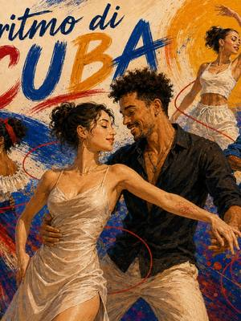
everywedDance and movementA ritmo di Cuba: salsa and Afro-Cuban danceEvery Wednesday, 20:30–22:30Aurora (TO) · 8 € per lessonwith Daikor Manuel Rodriguez Hernandez at Cecchi Point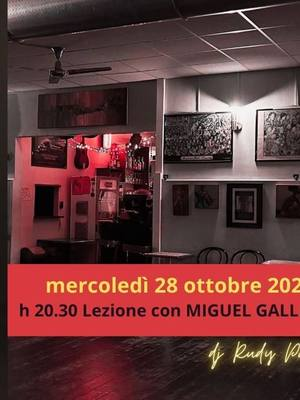
everywedDance and movementTango at Neruda: lesson and milongaEvery Wednesday, 20:30Borgo Vittoria (TO) · 12 €with Cafè Neruda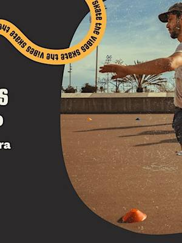
everywedDance and movementSurfskate: lessons at Parco DoraEvery Wednesday, 20:30Parco Dora (TO) · 20 € per lessonwith Surf In Town Community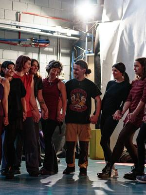
everywedDance and movementDabka course: a dance from the LevantEvery Wednesday, 21:00–22:00Barriera di Milano (TO) · 50 € per monthwith Layall Chamass at Bunker- everymonDance and movementDanza la tua essenza: free movementEvery Monday, 21:00–22:00San Mauro Torinese (TO)with upTOyou